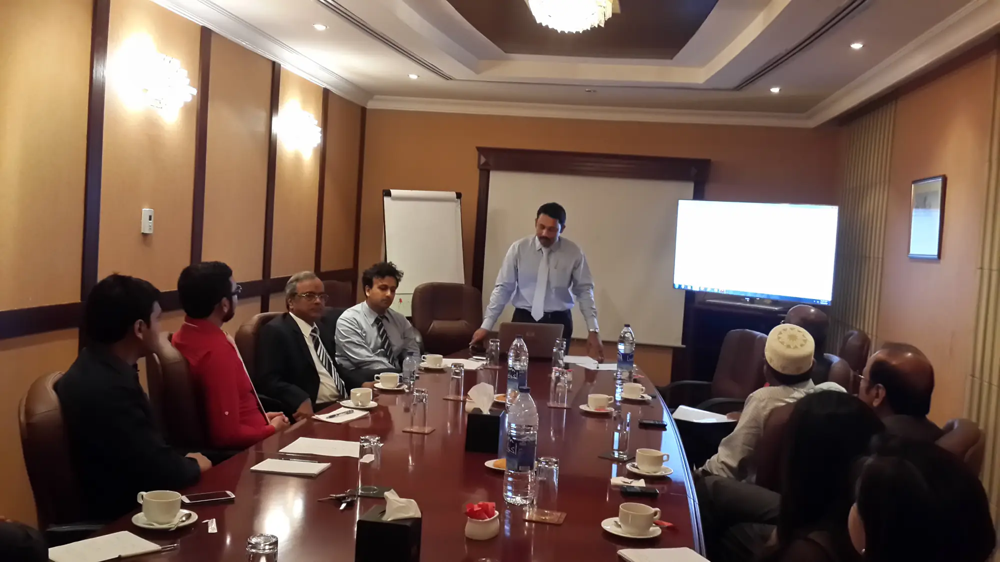

من مومباي إلى دبي
جاء كيران سانغاني، المحاسب القانوني وخريج القانون، إلى دبي عام 1977 رئيساً لحسابات مجموعة تجارية، وأصبح مديرها المالي خلال أربع سنوات. وفي 1984 افتتح مكتبه الخاص.
محاسبون قانونيون ومدققو حسابات في دبي منذ 1984
ندقق حسابات الشركات، ونمسك دفاترها، ونتابع ضريبة القيمة المضافة، ونؤسس الشركات أو نصفّيها في البر الرئيسي والمناطق الحرة والأوفشور.

التدقيق هو أغلب عملنا، وحوله مسك الدفاتر والضريبة وتأسيس الشركات وإغلاقها. افتح أي بند لترى ما يشمله.
مدققو حسابات مسجلون لدى وزارة الاقتصاد ودائرة التنمية الاقتصادية، ومكتب تدقيق معتمد لدى مركز دبي المالي العالمي وسلطة دبي للخدمات المالية.
كثير من الشركات الجديدة لا تسجّل معاملاتها لضيق الوقت أو لعدم وجود محاسب مؤهل. نمسك الدفاتر عنك ونجهّز لك نظاماً محاسبياً تقدر تديره.
يشرف عليها الشريك بنفسه، بخبرته في KPMG دبي وPwC في الولايات المتحدة.
نسألك أولاً عن نشاط الشركة وخططك، ثم نختار معك الشكل القانوني والمنطقة الأنسب من حيث التكلفة، ونتابع الإجراءات.
إغلاق الشركة ليس إجراءً بسيطاً. قمنا بالكثير من التصفيات خلال ثلاثة عقود ونعمل كمصفٍّ رسمي.
نجهّز دراسة المشروع، ونرافقك إلى البنك، ونرشدك في المستندات المطلوبة.
نراجع الجوانب القانونية والمحاسبية والمالية والموارد البشرية للشركة المستهدفة، ولدينا قسم مستقل للاندماج والاستحواذ يبحث عن البائعين والمشترين.
نتعمق في الجزء المتأثر، ونقدّر حجم ما حدث، ونرفع تقريراً لصاحب العمل.
في الغالب شركات خاصة متوسطة الحجم، في كل قطاع تقريباً في الدولة.
مسجلونمدققو حسابات لدى وزارة الاقتصاد ودائرة التنمية الاقتصادية في دبي.
معتمدونلدى مركز دبي المالي العالمي منذ 2009، وسلطة دبي للخدمات المالية منذ 2012.
وكيل مسجّللشركات أوفشور جافزا منذ 2007 وأوفشور رأس الخيمة منذ 2010.
عاماً في دبي. افتتح كيران سانغاني المكتب عام 1984، بعد سبع سنوات من قدومه من مومباي رئيساً لحسابات مجموعة تجارية.
عميل في محفظة المؤسس، من قطاعات كثيرة ومتنوعة.
مكتبان: برج أونتاريو في الخليج التجاري، وفرع في سيف زون بالشارقة.
من أرشيف المكتب: قصاصات صحف وصور من أربعة عقود في دبي.
جاء كيران سانغاني، المحاسب القانوني وخريج القانون، إلى دبي عام 1977 رئيساً لحسابات مجموعة تجارية، وأصبح مديرها المالي خلال أربع سنوات. وفي 1984 افتتح مكتبه الخاص.
عضو مؤسس في فرع دبي لمعهد المحاسبين القانونيين في الهند، وأمين صندوقه 1986–1988 وأمين سره الفخري 1998–2000.
بصفته أمين السر الفخري لمنتدى الهنود الاقتصادي في الخارج، جلس على منصات مع من كانوا يبنون اقتصاد دبي.
صورة: المنتدى يستقبل سعادة محمد علي العبار، مدير عام دائرة التنمية الاقتصادية آنذاك. كيران سانغاني في أقصى اليسار.
انضم براتيك سانغاني شريكاً عام 2007 بعد KPMG دبي وPwC أمريكا. اعتماد مركز دبي المالي العالمي 2009 وسلطة دبي للخدمات المالية 2012، وفرع سيف زون 2012، وعضوية Kudos 2015، ثم مكتب أكبر في الخليج التجاري 2016.
صورة: براتيك سانغاني (يسار الصورة) وشبير باتانوالا يتسلمان شهادة "الشريك الاستراتيجي 2013" من سيف زون.الشريك والمدير اللذان يديران المكتب اليوم.
شريك · B.Com, FCA, CPA, CIA, CISA
مسؤول عن أعمال التدقيق القانوني والداخلي للبنوك والفنادق وشركات الصرافة ومجموعات المجوهرات والمقاولات. عمل في KPMG دبي (2002–2005) ثم PwC في الولايات المتحدة (2005–2007).
مدير الاستشارات · في المكتب منذ 1988
أسس قسم تأسيس الشركات، ويتولى تأسيس وتصفية الشركات في البر الرئيسي والمناطق الحرة والأوفشور، وشارك في تحقيقات لصالح مصرف الإمارات المركزي.

برج أونتاريو، الطابق الثاني، مكتب 203 و204، شارع الأعمال، الخليج التجاري، دبي
مقابل فندق أوبروي، منطقة برج خليفة.